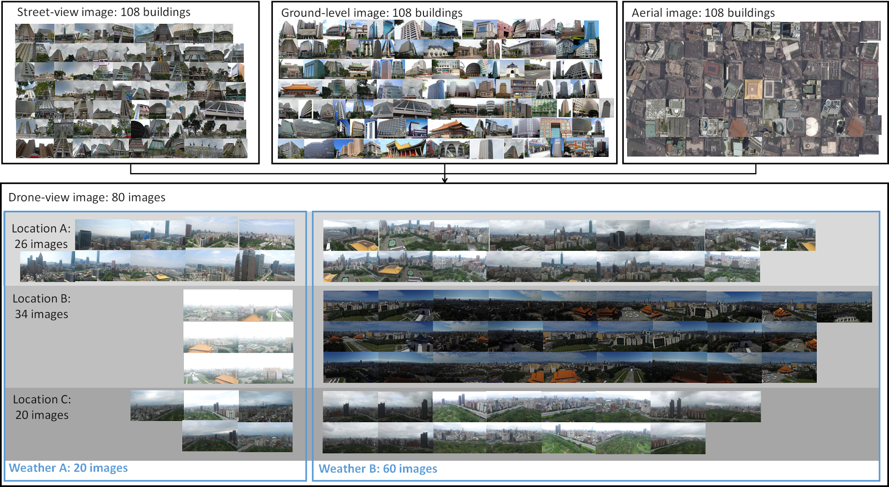
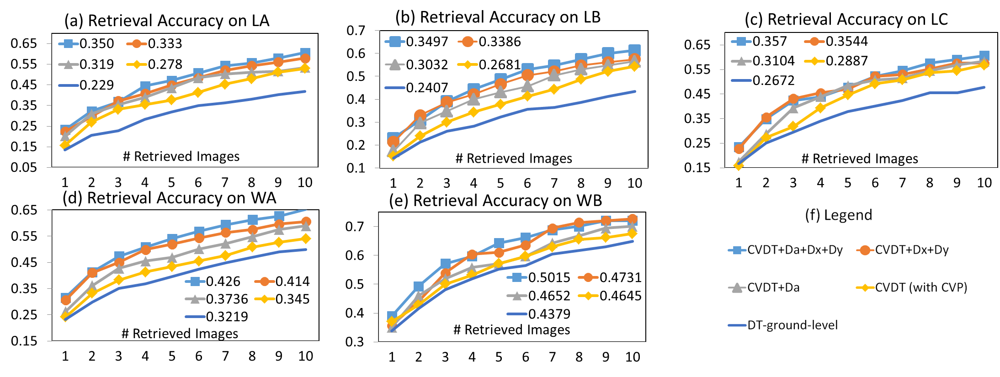

- Authors Chun-Wei Chen, Yin-Hsi Kuo, Tang Lee, Cheng-Han Lee, Winston Hsu
- Abstract
- Publication Chun-Wei Chen, Yin-Hsi Kuo, Tang Lee, Chen-Han Lee, Winston Hsu. Drone-View Building Identification by Cross-View Visual Learning and Relative Spatial Estimation, CVPR 2018 Workshop, VOCVALC 2018, 2nd International workshop on Visual Odometry and Computer Vision Applications based Location Clues
- Codes [github]
- Dataset
- Drone-BR 
- Building retrieval/identification task
- 80 drone-view images: 18 [1920x1080] + 62 [3840x2160] (we collected)
- 585 queries (16,000 proposals)
- (a) Building queries from web (b) Matched bounding boxes (c) Drone’s geolocation for images
- Because of the Google policy, we cannot provide the images colltected from Google directly. (i.e., ground-level images from Google Images Search, stree-view images from Google Stree-View and aerial images from Google Maps) Nevertheless, these images can be obtained easily by automatically parsing codes with the buildings' names and GPS.
- [download]
- Drone-view images:
- frame/all/[filename].jpg: all of images
- frame/LocationA/test/[filename].jpg: images taken at Sun Yat-sen Memorial Hall
- frame/LocationB/test/[filename].jpg: images taken at Chiang Kai-shek Memorial Hall
- frame/LocationC/test/[filename].jpg: images taken at Daan Forest Park
- frame/WeatherA/test/[filename].jpg: images taken under the same weather
- frame/WeatherB/test/[filename].jpg: images taken under the same weather
- location.txt: [filename] [latitude] [longitude] [compass] [height] P.S.: compass: NESW(0, 90, 180, -90)
- Building proposals by Faster R-CNN for each image: faster_bb/[filename].txt
- Building queries for each image by Google Places API: poi/[filename].txt
- [building name]\t[latitude]\t[longitude]\t[building type]\t[google image]\t[x1,y1,x2,y2]
- Drone-BD
- Building detection task for proposals
- 80 drone-view images: 18 [1920x1080] images (we collected) + 185 [1200x800] images (from Dronestagram)
- 2,334 bounding boxes for buildings
- [download]
-
Collected drone-view images:
- Collected/img/[filename].jpg
- Collected/annotation/[filename].txt: x1 y1 x2 y2 1
-
Dronestagram drone-view images:
- Dronestagram/img/[filename].jpg
- Dronestagram/annotation/[filename].xml: tag([xmin], [ymin], [xmax], [ymax])
- IG-City8
- Building matching task in 8 cities
- 4,409 [640x640] images (from Instagram) for 848 buildings
- 104,906 triplets (209,812 pairs) for matched building images
- [download]
- Images of the same building are in the same directory.
- Experimental Results
- Demo Video
- References 1. Krizhevsky, Alex, Ilya Sutskever, and Geoffrey E. Hinton. "Imagenet classification with deep convolutional neural networks." Advances in neural information processing systems. 2012.
- Acknowledgement This work was supported in part by MediaTek Inc and the Ministry of Science and Technology, Taiwan, under Grant MOST 107-2634-F-002-007. We also benefit from the grants from NVIDIA and the NVIDIA DGX-1 AI Supercomputer.
- Contact If you have any problems about our work, do not hesitate to contact me jacky82226@gmail.com.
Drones become popular recently and equip more sensors than traditional cameras, which bring emerging applications and research. To enable drone-based applications, providing related information (e.g., building) to understand the environment around the drone is essential. We frame this drone-view building identification as building retrieval problem: given a building (multimodal query) with its images, geolocation and drone's current location, we aim to retrieve the most likely proposal (building candidate) on a drone-view image. Despite few annotated drone-view images to date, there are many images of other views from the Web, like ground-level, street-view and aerial images. Thus, we propose a cross-view triplet neural network to learn visual similarity between drone-view and other views, further design relative spatial estimation of each proposal and the drone, and collect new drone-view datasets for the task. Our method outperforms triplet neural network by 0.12 mAP. (i.e., 22.9 to 35.0, +53% in a sub-dataset [LA])
We collect drone-view images with our drone (DJI 3) by designing and using an app for automatically recording all drone sensors including GPS tracker, compass and altimeter while capturing images. We fix the angle of depression as 20°, raise the drone to 40m to 90m height and capture images with multiple buildings. Each image consists of 1-12 buildings as queries which have corresponding bounding boxes on drone-view images. We collect 80 images and annotate 108 buildings with bounding boxes on them at 3 locations under different weather. Besides, with Google Places API, we gather other information for these buildings including name, latitude and longitude. We gather ground-level, street-view and aerial images for each building. Since the same buildings may appear in different images, there are 585 building queries in total, which is Drone-BR. Since buildings may be occluded or in low resolution, it requires great effort to annotate them with their corresponding high-resolution drone-view images (mostly 3840x2160). In our setting, we search each building query in 200 proposals on a drone-view image, which means the Drone-BR can be also described as 585 queries with 16,000 (200*80) sub-images for searching. Our experiment results show that our method can perform better with limited training data and it is scalable because the building identification for each drone-view image is performed independently.
On top of that, to the best of our knowledge, there are almost none drone-view images for building detection in any public datasets. In order to obtain building proposals with better quality, we also annotate 2,334 building bounding boxes on our 18 drone-view images and 185 images from Dronestagram website for training RPN [5]. This drone-view building detection dataset is called Drone-BD.
Due to the lack of drone-view data, we collect building images based on check-ins (locations) from Instagram and use the hashtag of #building and #buildings in 8 cities including New York, London, Paris, Hong Kong, Tokyo, Sydney, Berlin and San Francisco, to get building images. They are mostly ground-view or street-view images taken by users. We make buildings with the same location be a positive pair and with another random location be a negative pair to form a triplet. We manually remove some noisy images owing to not facing the correct building; eventually, there are 4,409 images, 848 buildings and 104,906 triplets in our Instagram building dataset called IG-City8.
| Query images mAP (%) |
Aerial image | Street-view image |
Ground-level image |
|---|---|---|---|
| ImageNet-AlexNet [1] | 5.32 | 7.43 | 15.87 |
| Places205-AlexNet [2] | 6.98 | 9.27 | 20.55 |
| IG-City8-Triplet [3] | 7.38 | 13.06 | 21.61 |
Effect of initial models. mAP (%) of various initial models on Drone-BR with 3 different types of 585 queries. It is critical to utilize related dataset (IG-City8) for getting better performance. Ground-level image is the most useful due to containing more visual information than other views.
| Methods | mAP (%) on 585 queries |
|---|---|
| Drone-angle (Da) | 8.91 |
| Drone-distance (Dx, Dy) | 12.29 |
| Drone-angle(Da) + Drone-distance (Dx, Dy) | 16.23 |
| IG-City8-Triplet [3] (Visual features) | 21.61 |
Relative spatial estimation versus visual features. The performance of relative spatial estimation is worse than visual features (even worse than methods without learning). Since there are multiple candidates with similar angle and distance, it is hard to distinguish them based on spatial estimation, which motivates us to leverage visual features.
| mAP (%) # training images # testing images |
Location A (LA) 362 223 |
Location B (LB) 355 230 |
Location C (LC) 453 132 |
Weather A (WA) 149 436 |
Weather B (WB) 436 149 |
|---|---|---|---|---|---|
| ImageNet-AlexNet [1] | 15.00 | 17.70 | 14.14 | 15.09 | 16.15 |
| Places205-AlexNet [2] | 19.56 | 19.33 | 24.36 | 17.96 | 21.48 |
| IG-City8-Triplet [3] | 20.42 | 20.43 | 25.69 | 18.56 | 22.70 |
| Baseline (DT) [3] | 22.89 | 24.07 | 26.72 | 32.19 | 43.79 |
| CVDT (Max-pooling) [4] | 25.14 | 24.97 | 25.02 | 33.04 | 44.30 |
| CVDT (Cross-View Pooling) | 27.75 | 26.81 | 28.87 | 34.47 | 46.45 |
| CVDT + Spatial (Da, Dx, Dy) | 35.00 | 34.97 | 35.70 | 42.60 | 50.15 |
Cross-view visual learning. mAP of different models on each subset. LA means that DT and CVDT are trained on Location B and Location C, and tested on Location A (i.e., buildings in Location A are unseen). WA and WB have seen all the buildings but trained and tested under different weather. \# means the number of images. The results indicates our proposed CVDT+CVP outperforms others on all subsets. (IG-City8 follows the same training process as [3] and forms triplet by IG-City8. CVDT (CVP)+Spatial is the method combines with Da+Dx+Dy.)
Retrieval with relative spatial estimation. The retrieval accuracy of line charts is drawn by different top-ranked images on five various subsets among different models. Each model is trained by other subsets. The value after line is mAP. The results show that our proposed method (CVDT+Da+Dx+Dy) can achieve the best performance under various settings.
2. Zhou, Bolei, et al. "Learning deep features for scene recognition using places database." Advances in neural information processing systems. 2014.
3. Schroff, Florian, Dmitry Kalenichenko, and James Philbin. "Facenet: A unified embedding for face recognition and clustering." Proceedings of the IEEE conference on computer vision and pattern recognition. 2015.
4. Su, Hang, et al. "Multi-view convolutional neural networks for 3d shape recognition." Proceedings of the IEEE international conference on computer vision. 2015.
5. Ren, Shaoqing, et al. "Faster r-cnn: Towards real-time object detection with region proposal networks." Advances in neural information processing systems. 2015.